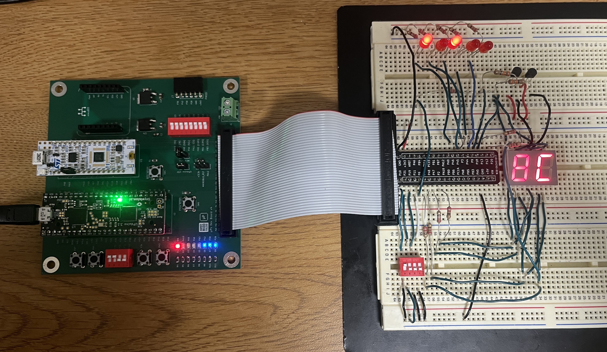
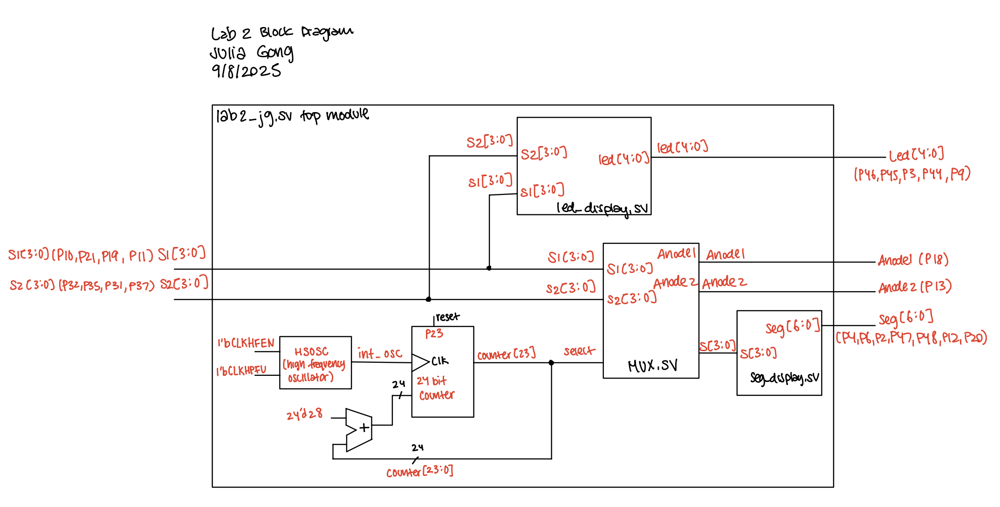
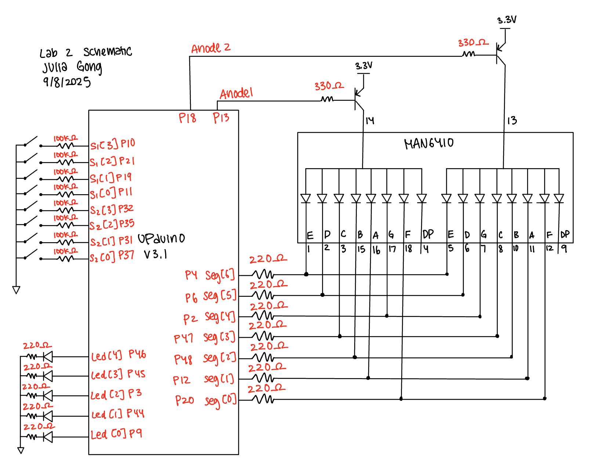
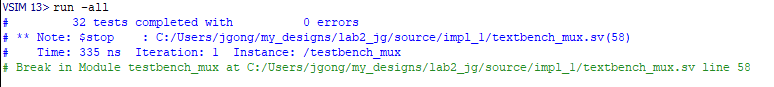
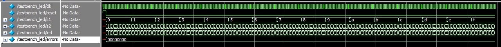
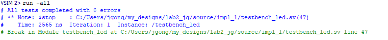
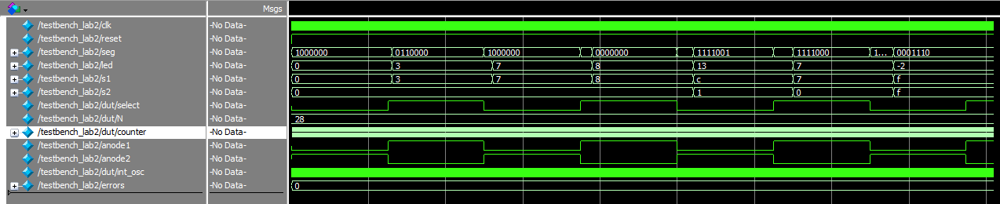
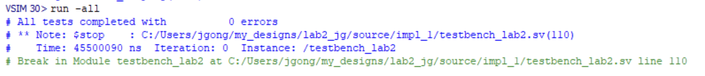

Lab 2: Multiplexed 7-Segment Display
Introduction
In this lab, I used time multiplexing to drive two 7-segment displays using a single set of FPGA I/O pins. Time multiplexing was used because the anode of the 7-segment displays required more current than the FPGA output could provide. The dual 7-segment display takes inputs from 2 DIP switches, each are 4 bits, and outputs the values from each input. Additionally, the sum of the digits are shown on a set of 5 LEDs.
FPGA Design and Testing Methodology.
The design was developed using a clock divider that toggles the frequency, a mux that chooses which anode will be turned on, an adder that determines the sum of the inputs for the LED display, and the 7-segment display module created in Lab 1.
Since 60Hz is the largest frequency that humans can process, I decided to toggle the counter at 80Hz so that the frequency would not be too fast that they numbers would bleed together.
The led display, 7-segment display, mux, and top module will all be verified using self-checking testbenches.
Hardware Implementation

The components of this lab consisted of the development board, a dual 7-segment display, 5 LEDs, two 2N3906 PNP transistors, and a DIP switch.
When implementing the design onto the breadboard, 220Ω resistors were used to draw current from each segment of the dual 7-segment display. Since there was a PNP transistor connected to the anodes, there is a Vceast of 200mV. Additionally, there is a voltage drop from the LED segment of 1.8V. Using V = IR, (3.3V - 0.2V - 1.8V)/10mA = R, where R = 130Ω.
The resistors used to connect the base of the PNP transistor to the FPGA pins were 330Ω resistors. This value was calculated using V = IR, where V = 3.3V - 0.65V and Ic = 8mA. 0.65V is the base emitter saturation voltage found on the datasheet and 8mA is the current limit.
For the LEDs, the voltage drop for a red LED is approximately 2.1 V and the desired current is around 10mA. Using the equation V = IR, R = (3.3-2.1V)/20mA = 110. To ensure the proper current I used 220Ω resistors.
Technical Documentation
The code for this lab can be found in this Github repository. This contains the code for the top module, led display module, mux module, and 7-segment display module in addition to the testbenches for all four modules.
Block Diagram
The block diagram below depicts how the input and internal signals are connected among the modules to produce the 7-segment display and LED outputs.

Schematic
The schematic below depicts the pin assignments for the hardware components.

Results and Discussion
All of the 7-segment display and led display outputs work as expected. This can be shown through simulation results as well as hardware performance.
Testbench Simulation
The waveforms from the mux module simulation show that the mux is choosing the proper values for s[3:0], anode1, and anode2.


The waveforms from the led module show that the sum of the inputs s1[3:0] and s2[3:0] are properly summed and assigned to each bit of the LED display.


The waveforms for the 7-segment display verify that the proper pattern of segments are lit up in response to the 4-bit input. 

The waveforms for the top module show that the values for anode1 and anode2 are toggling in response to the counter/select value at the correct frequency. As a result the simulation results indicate that the proper segment output is chosen.


Conclusion
The design successfully displayed the inputs on the dual 7-segment display through time multiplexing and added the values of the inputs to display on the 5 LEDS.
This lab took a total of 8 hours.
AI Prototype Summary
For the AI prototype, I prompted ChatGPT with: Write SystemVerilog HDL to time multiplex a single seven segment decoder (that decodes from four bits to a common anode seven segment display) to decode two sets of input bits and drive two sets of seven output bits.
After evaluating the code that ChatGPT wrote, I think that the logic of it all looks pretty good. This main noticable error is the value for the 7-segment display outputs. They switching the order of the bits to read from lead significant to most significant. I do think that ChatGPT was able to produce this code well because the logic is fairly simple and straightforward.
The link to the conversation can be found here.